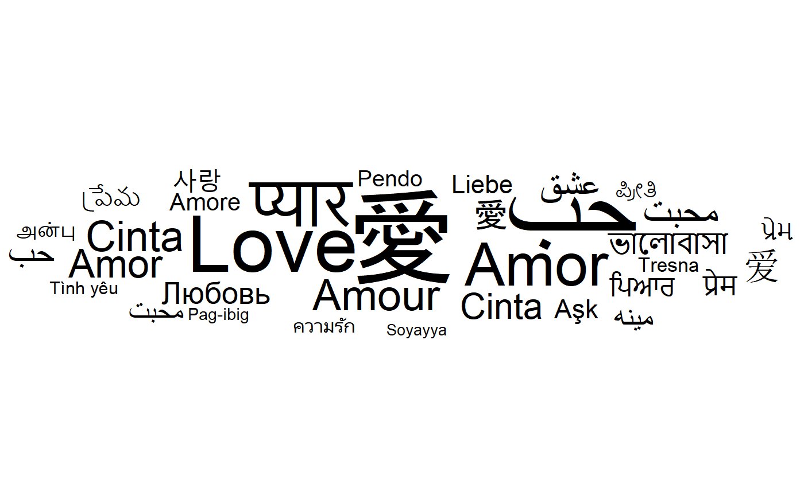
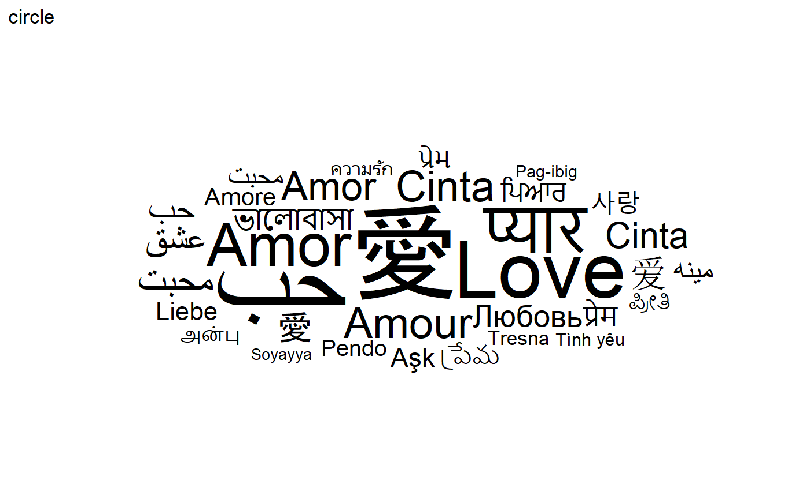
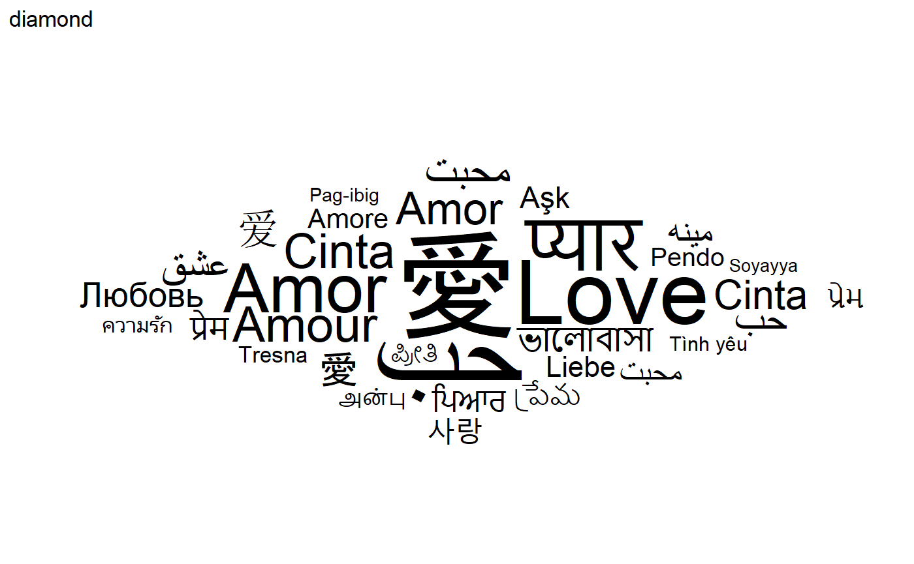
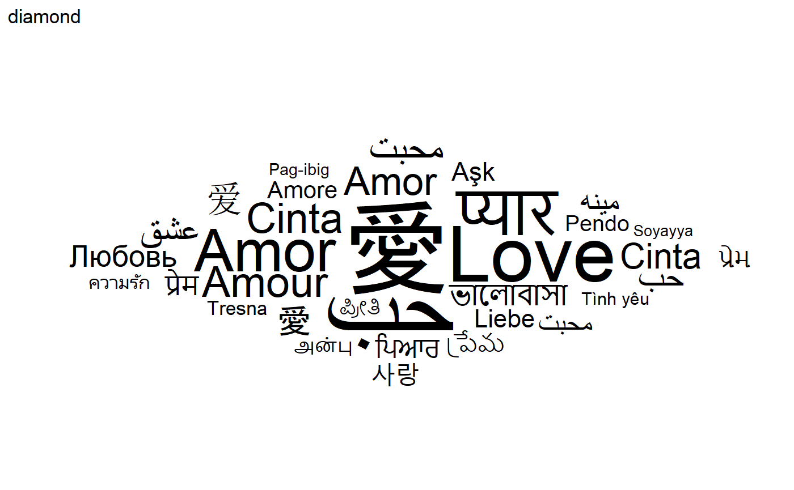
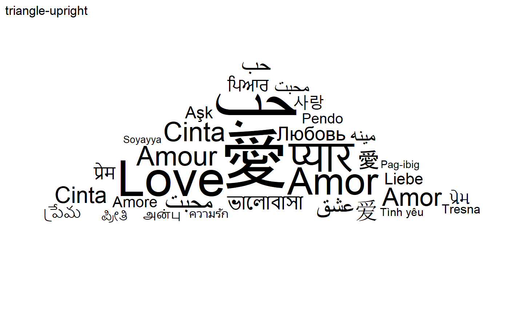
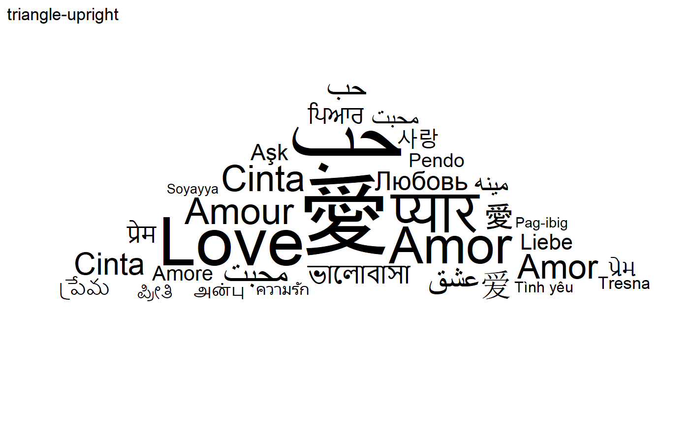
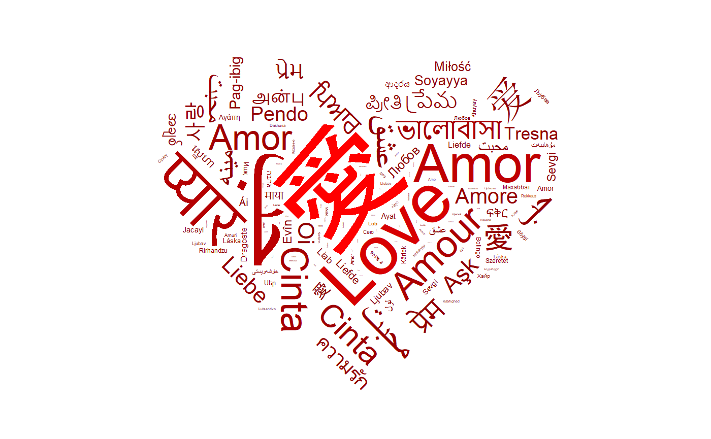
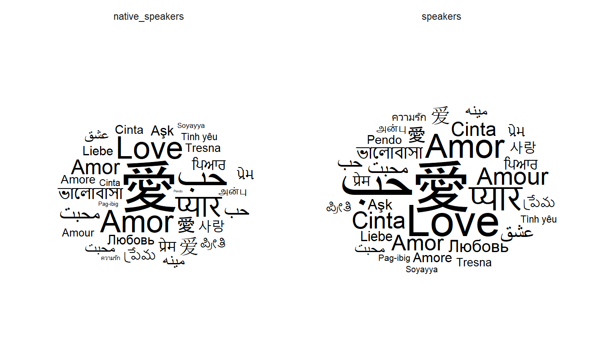
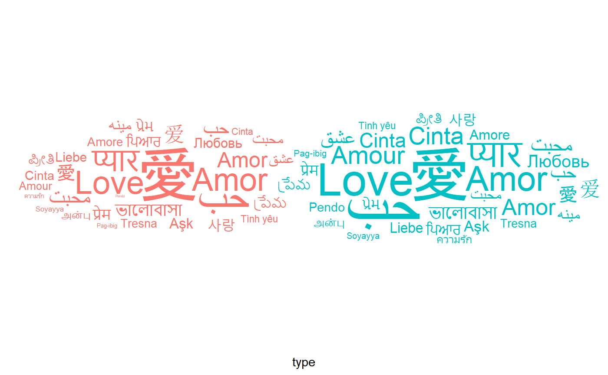

ggwordcloud: a word cloud geom for ggplot2
E. Le Pennec
2024-05-30
Source:vignettes/ggwordcloud.Rmd
ggwordcloud.Rmdggwordcloud provides a word cloud text geom for
ggplot2. The placement algorithm implemented in C++ is an
hybrid between the one of wordcloud and the one of
wordcloud2.js. The cloud can grow according to a shape and
stay within a mask. The size aesthetic is used either to control the
font size or the printed area of the words. ggwordcloud
also supports arbitrary text rotation. The faceting scheme of
ggplot2 can also be used. Two functions meant to be the
equivalent of wordcloud and wordcloud2 are
proposed. Last but not least you can use gridtext
markdown/html syntax in the labels.
This vignette is meant as a quick tour of its features.
Package installation
The package can be installed from CRAN by
install.packages("ggwordcloud")or the development version from the github repository
devtools::install_github("lepennec/ggwordcloud")Please check the latest development version before submitting an issue.
The love / thank you words dataset
Along this vignette, we will use a lovely dataset: a
collection of the word love in several language combined with the number
of native speakers of those language as well as the total number of
speakers. The data have been extracted from wikipedia and is
exposed in two data frame of 4 columns: - lang: the ISO 649
language code - words: the word love in those languages -
native_speakers: the number of native speakers (in
millions) of those languages - speaker: the corresponding
total number of speakers (in millions) Another dataset with thank
you in several languages is also available. The first one
love_words (thankyou_words) contains 147 (133)
different languages while the second love_words_small
(thankyou_words_small) contains the 34 (34) languages
having more than 50 millions speakers.
library(ggwordcloud)
#> Loading required package: ggplot2Word cloud
The geom_text_wordcloud geom constructs a word cloud
from a list of words given by the label aesthetic:
set.seed(42)
ggplot(love_words_small, aes(label = word)) +
geom_text_wordcloud() +
theme_minimal()
Note that we have used theme_minimal() to display the
words and nothing else. The word cloud is, by default, centered and the
words are placed along a spiral in a way they do not overlap.
Because there is some randomness in the placement algorithm, the same command can yield a different result when using a different random seed:
set.seed(43)
ggplot(love_words_small, aes(label = word)) +
geom_text_wordcloud() +
theme_minimal()
Word cloud and text size
So far all the words had the same size because we do not specify a size aesthetic. If we use the total number of speakers, we obtain:
set.seed(42)
ggplot(love_words_small, aes(label = word, size = speakers)) +
geom_text_wordcloud() +
theme_minimal()
The words are scaled according to the value of the size aesthetic,
the number of speakers here. There are several classical choices for the
scaling: the font size could be chosen proportional to the value or to
the square root of the value so that the area of a given character is
respectively proportional to the square of the value or the value
itself. By default, ggplot2 uses the square root scaling
but does not map a value of \(0\) to
\(0\).
In order to obtain a true proportionality (and a better font size
control), one can use the scale_size_area() scale:
set.seed(42)
ggplot(love_words_small, aes(label = word, size = speakers)) +
geom_text_wordcloud() +
scale_size_area(max_size = 30) +
theme_minimal()
It turns out that both wordcloud and
wordcloud2 default to a linear scaling between the value
and the font size. This can be obtained with the
scale_radius() scale:
set.seed(42)
ggplot(love_words_small, aes(label = word, size = speakers)) +
geom_text_wordcloud() +
scale_radius(range = c(0, 30), limits = c(0, NA)) +
theme_minimal()
Word cloud and text area
As explained before, by default, this is the size of the font which
is proportional to the square root of the value of the size aesthetic.
This is a natural choice for a shape as the area of the shape will be
proportional to the raw size aesthetic but not necessarily for texts
with different lengths. In ggwordcloud2, there is an
option, area_corr to scale the font of each label so that
the text area is a function of the raw size aesthetic when used in
combination with scale_size_area:
set.seed(42)
ggplot(love_words_small, aes(label = word, size = speakers)) +
geom_text_wordcloud(area_corr = TRUE) +
scale_size_area(max_size = 50) +
theme_minimal()
One can equivalently use the geom_text_wordcloud_area
geom:
set.seed(42)
ggplot(love_words_small, aes(label = word, size = speakers)) +
geom_text_wordcloud_area() +
scale_size_area(max_size = 50) +
theme_minimal()
By default, the area is proportional to the raw size aesthetic. To
better match the human area perception, one can use the
power_trans scale with a factor of \(1/.7\):
set.seed(42)
ggplot(love_words_small, aes(label = word, size = speakers)) +
geom_text_wordcloud_area() +
scale_size_area(max_size = 50, trans = power_trans(1/.7)) +
theme_minimal()
Word cloud with too many words
The non overlapping algorithm may fail to place some words due to a lack of space. By default, those words are displayed at the center of the word cloud and comes with a warning.
set.seed(42)
ggplot(love_words_small, aes(label = word, size = speakers)) +
geom_text_wordcloud_area() +
scale_size_area(max_size = 80) +
theme_minimal()
#> Warning in wordcloud_boxes(data_points = points_valid_first, boxes = boxes, :
#> Some words could not fit on page. They have been placed at their original
#> positions.
It is up to the user to avoid this issue by either removing some
words or changing the size scale. One can also chose to remove those
words using the rm_outside option:
set.seed(42)
ggplot(love_words_small, aes(label = word, size = speakers)) +
geom_text_wordcloud_area(rm_outside = TRUE) +
scale_size_area(max_size = 80) +
theme_minimal()
#> Warning in wordcloud_boxes(data_points = points_valid_first, boxes = boxes, :
#> Some words could not fit on page. They have been removed.
Word cloud and rotation
The words can be rotated by setting the angle aesthetic.
For instance, one can use a rotation of 90 degrees for a random subset
of 40 % of the words:
library(dplyr, quietly = TRUE)
#>
#> Attaching package: 'dplyr'
#> The following objects are masked from 'package:stats':
#>
#> filter, lag
#> The following objects are masked from 'package:base':
#>
#> intersect, setdiff, setequal, union
love_words_small <- love_words_small %>%
mutate(angle = 90 * sample(c(0, 1), n(), replace = TRUE, prob = c(60, 40)))
set.seed(42)
ggplot(love_words_small, aes(
label = word, size = speakers,
angle = angle
)) +
geom_text_wordcloud_area() +
scale_size_area(max_size = 40) +
theme_minimal()
ggwordcloud is not restricted to rotation of 90
degrees:
love_words_small <- love_words_small %>%
mutate(angle = 45 * sample(-2:2, n(), replace = TRUE, prob = c(1, 1, 4, 1, 1)))
set.seed(42)
ggplot(love_words_small, aes(
label = word, size = speakers,
angle = angle
)) +
geom_text_wordcloud_area() +
scale_size_area(max_size = 40) +
theme_minimal()
Word cloud and eccentricity
The ggwordcloud algorithm moves the text around a spiral
until it finds a free space for it. This spiral has by default a
vertical eccentricity of .65, so that the spiral is 1/.65 wider than
taller.
set.seed(42)
ggplot(love_words_small, aes(label = word, size = speakers)) +
geom_text_wordcloud_area() +
scale_size_area(max_size = 40) +
theme_minimal()
This can be changed using the eccentricity
parameter:
set.seed(42)
ggplot(love_words_small, aes(label = word, size = speakers)) +
geom_text_wordcloud_area(eccentricity = 1) +
scale_size_area(max_size = 40) +
theme_minimal()
set.seed(42)
ggplot(love_words_small, aes(label = word, size = speakers)) +
geom_text_wordcloud_area(eccentricity = .35) +
scale_size_area(max_size = 40) +
theme_minimal()
Word cloud and shape
The base shape of ggwordcloud is a circle: the words are
place by following a circle spiral. This base shape
circle can be change to others (cardioid,
diamond, square,
triangle-forward, triangle-upright,
pentagon or star) using the shape
option.
for (shape in c(
"circle", "cardioid", "diamond",
"square", "triangle-forward", "triangle-upright",
"pentagon", "star"
)) {
set.seed(42)
print(ggplot(love_words_small, aes(label = word, size = speakers)) +
geom_text_wordcloud_area(shape = shape) +
scale_size_area(max_size = 40) +
theme_minimal() + ggtitle(shape))
} 

 


Word cloud and color
A color can be assign to each word using the color aesthetic. For instance, one can assign a random factor to each word:
set.seed(42)
ggplot(
love_words_small,
aes(
label = word, size = speakers,
color = factor(sample.int(10, nrow(love_words_small), replace = TRUE)),
angle = angle
)
) +
geom_text_wordcloud_area() +
scale_size_area(max_size = 40) +
theme_minimal()
One can also map the color to a value, for instance the number of
speakers, and chose the colormap with a scale_color_*
scale:
set.seed(42)
ggplot(
love_words_small,
aes(
label = word, size = speakers,
color = speakers, angle = angle
)
) +
geom_text_wordcloud_area() +
scale_size_area(max_size = 40) +
theme_minimal() +
scale_color_gradient(low = "darkred", high = "red")
Word cloud and mask
ggwordcloud allows to specify a mask within which the
words should be placed. More precisely, the non transparent
pixels in an image array (or the black pixel if there is no
transparency) will be used as a mask:
set.seed(42)
ggplot(love_words_small, aes(label = word, size = speakers)) +
geom_text_wordcloud_area(
mask = png::readPNG(system.file("extdata/hearth.png",
package = "ggwordcloud", mustWork = TRUE
)),
rm_outside = TRUE
) +
scale_size_area(max_size = 42) +
theme_minimal()
#> Warning in wordcloud_boxes(data_points = points_valid_first, boxes = boxes, :
#> Some words could not fit on page. They have been removed.
Word cloud with almost everything
We are now ready to make a lovely word cloud:
love_words <- love_words %>%
mutate(angle = 45 * sample(-2:2, n(), replace = TRUE, prob = c(1, 1, 4, 1, 1)))
set.seed(42)
ggplot(
love_words,
aes(
label = word, size = speakers,
color = speakers, angle = angle
)
) +
geom_text_wordcloud_area(
mask = png::readPNG(system.file("extdata/hearth.png",
package = "ggwordcloud", mustWork = TRUE
)),
rm_outside = TRUE
) +
scale_size_area(max_size = 40) +
theme_minimal() +
scale_color_gradient(low = "darkred", high = "red")
Modified label content and markdown/html syntax
With the label_content aesthetic, cne can specify a
different label content than the one used to compute the size. Note that
this is equivalent to replace label when not using the text
area option.
set.seed(42)
ggplot(love_words_small, aes(label = word, size = speakers,
label_content = sprintf("%s (%g)", word, speakers))) +
geom_text_wordcloud_area() +
scale_size_area(max_size = 30) +
theme_minimal()
We can combined this with the markdown/html syntax of
gridtext to obtain the nicer
set.seed(42)
ggplot(love_words_small, aes(label = word, size = speakers,
label_content = sprintf("%s<span style='font-size:7.5pt'>(%g)</span>", word, speakers))) +
geom_text_wordcloud_area() +
scale_size_area(max_size = 40) +
theme_minimal()Advanced features
geom_text_wordcloud is compatible with the facet system
of ggplot2. For instance, one can easily display two word
clouds for the speakers and the native speakers with the same
scales:
library(dplyr, quietly = TRUE, warn.conflicts = FALSE)
library(tidyr, quietly = TRUE)
love_words_small_l <- love_words_small %>%
gather(key = "type", value = "speakers", -name, -word, -angle, -iso_639_3) %>%
arrange(desc(speakers))
set.seed(42)
ggplot(
love_words_small_l,
aes(label = word, size = speakers)
) +
geom_text_wordcloud_area() +
scale_size_area(max_size = 30) +
theme_minimal() +
facet_wrap(~type)
One can also specify an original position for each label that what will be used as the starting point of the spiral algorithm for this label:
set.seed(42)
ggplot(
love_words_small_l,
aes(
label = word, size = speakers,
x = type, color = type
)
) +
geom_text_wordcloud_area() +
scale_size_area(max_size = 30) +
scale_x_discrete(breaks = NULL) +
theme_minimal()
Finally, there is a angle_group option that can be used
to restrict the words to appear only in a angular sector depending on
their angle_group. For instance, we will visualize the
changes of proportions of each language between the speakers and the
native speakers by displaying the words above the horizontal line if the
proportion is greater than in the other category and below
otherwise.
love_words_small_l <- love_words_small_l %>%
group_by(type) %>%
mutate(prop = speakers / sum(speakers)) %>%
group_by(name, word) %>%
mutate(propdelta = (prop - mean(prop)) / sqrt(mean(prop)))
set.seed(42)
ggplot(
love_words_small_l,
aes(
label = word, size = abs(propdelta),
color = propdelta < 0, angle_group = propdelta < 0
)
) +
geom_text_wordcloud_area() +
scale_size_area(max_size = 30) +
theme_minimal() +
facet_wrap(~type)
ggwordcloud as an approximate replacement for
wordcloud and wordcloud2
ggwordcloud and ggwordcloud2 are two
approximate replacements for respectively wordcloud and
wordcloud2. They provide a similar syntax than the original
functions and yields similar word clouds, but not all the options of the
original functions are implemented. Note that both use a font size
proportional to the raw size aesthetic rather than its square root.
set.seed(42)
ggwordcloud(love_words_small$word, love_words_small$speakers)
set.seed(42)
ggwordcloud2(love_words_small[, c("word", "speakers")], size = 2.5)